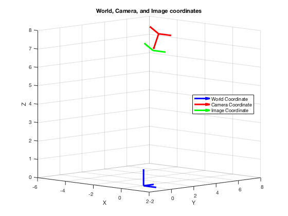

Machine Vision Homework 3
- Problem 1 Part a and b
- Author: Xinyi Cai
Contents
Housekeeping
clc;
clear all;
Given values
X_W = [-2, -2, -1, -1, 0, 0, 0, 0, 0, 0, 1, 1, 1, 1, 1, 1, 2, 2, 3, 3]';
Y_W = [1, 0, 1, 0, 5, 4, 3, 2, 1, 0, 5, 4, 3, 2, 1, 0, 5, 4, 5, 4]';
Z_W = zeros(1, 20)';
R = rotx(-150);
T = [5, 3, 10]';
f = 1;
Step 1
xyz = R * [X_W'; Y_W'; Z_W'] + T;
x(:, 1) = xyz(1, :);
y(:, 1) = xyz(2, :);
z(:, 1) = xyz(3, :);
clear xyz
Step 2
for i = 1:length(x)
X_u_temp = f*x(i)/z(i);
Y_u_temp = f*y(i)/z(i);
X_u(i, 1) = round(X_u_temp, 6);
Y_u(i, 1) = round(Y_u_temp, 6);
end
figure;
hold on
scatter3(X_W, Y_W, Z_W, 'r')
scatter3(x, y, z, 'g');
scatter(X_u, Y_u, 'b')
xlabel('X'); ylabel('Y'); zlabel('Z');
grid on
legend('Global', 'Camera', 'Image')
